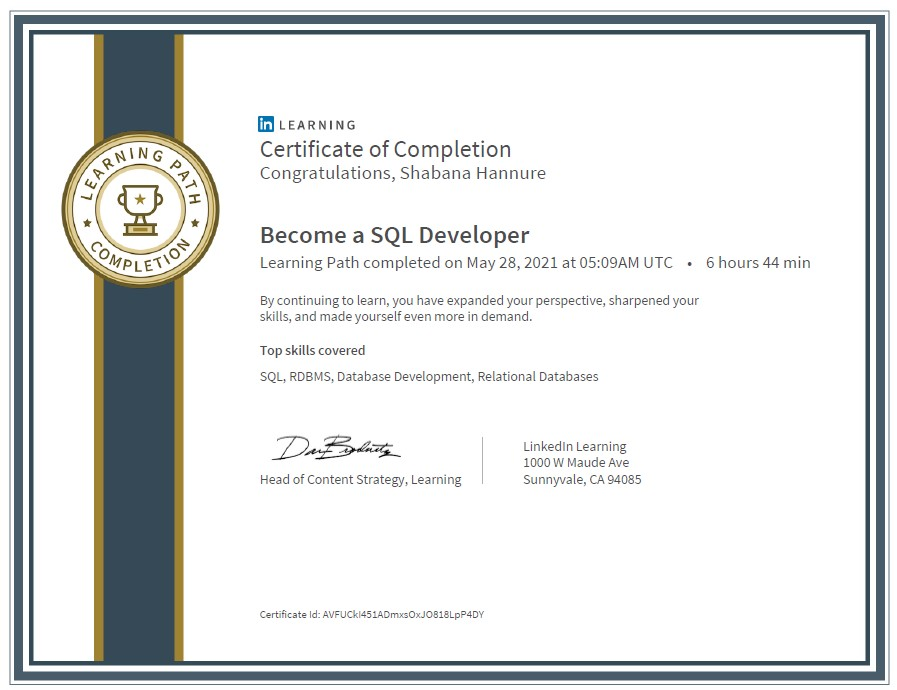
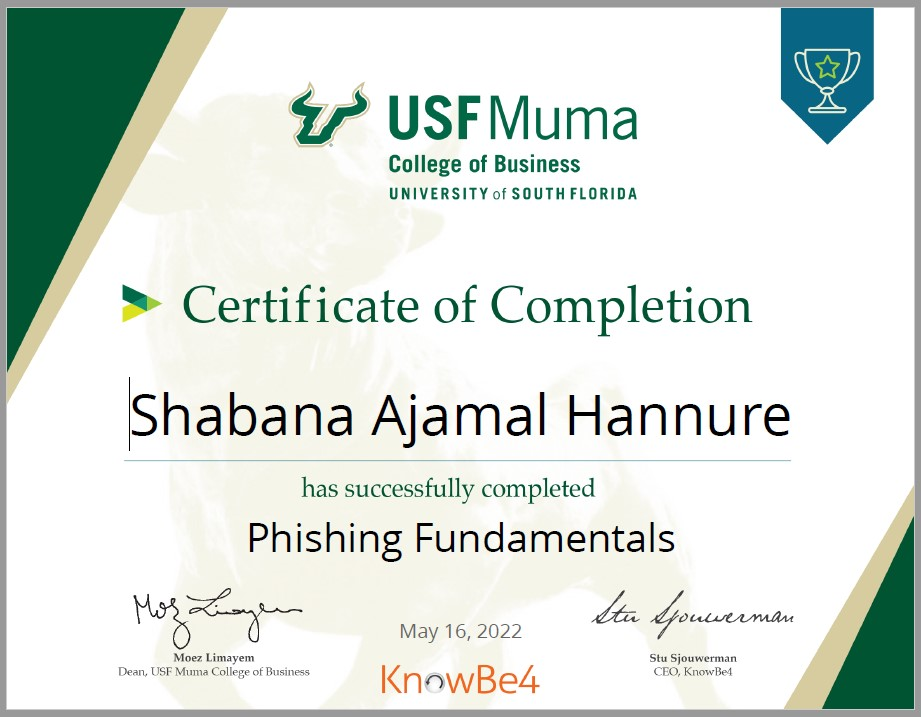

Awards


Hello! I'm Shabana, Data Engineer with 5 years of experience and a current Graduate student at University of South Florida, specializing in Business Analytics and Information Systems.
I am passionate about collecting, extracting, processing , visualizing and communicating data-driven solutions to support key business decisions
Enthusiastic about building fault-tolerant and high-impact data-intensive applications to solve real-world problems
In my free time I enjoy traveling, trying different cuisines, and most importantly spending time with friends and family!
You can download my résume in PDF format if you would like.
I did my Masters at IGNOU in India